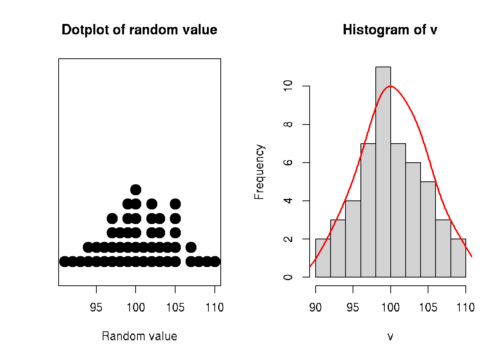
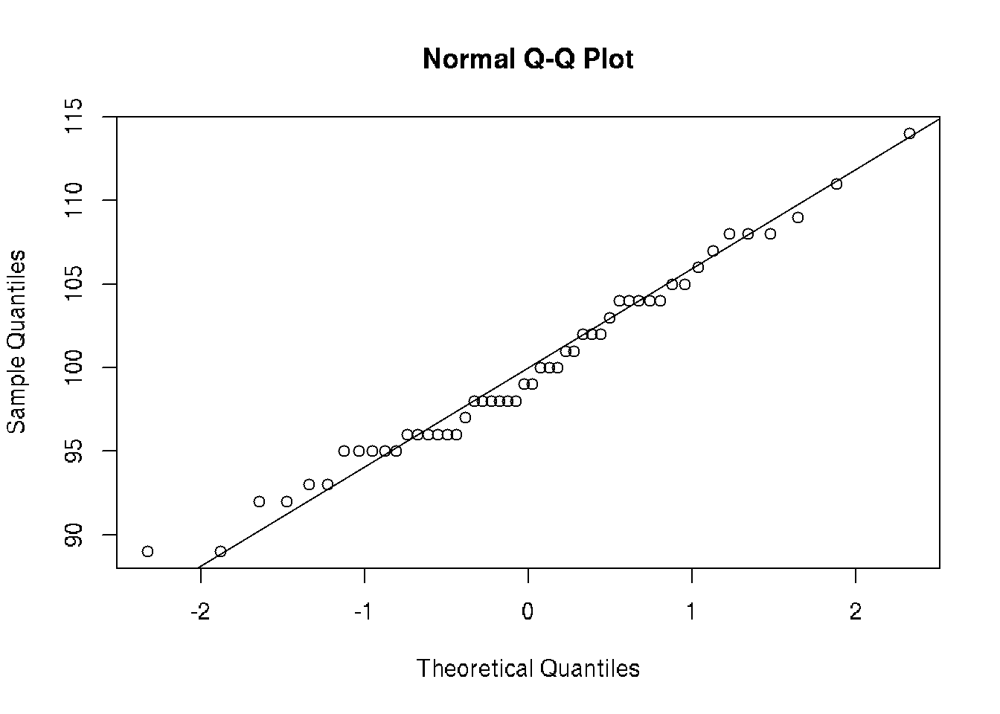
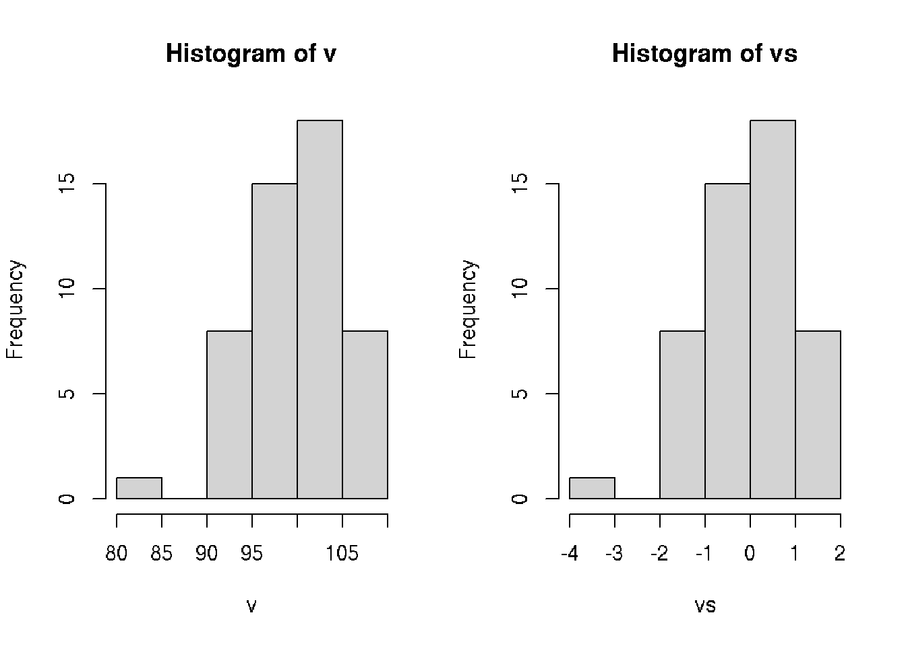

Chapter 3 Basic Statistics
3.1 Definitions
population - all existing samples
sample - subset of statistical population
simple random sample - random subset
stratified sample - fist clustering, than random sample from
cluster sample - random choosing from several existing clusters
variables - discret, continuous, ordinal (ранговая)
3.2 Analysis of sample distribution
3.2.1 Histogram
# sample of random integers
v <- round(rnorm(n=50, sd=5, mean=100))
par(mfrow=c(1,2))
stripchart(v, method = "stack", pch=19, cex=2, offset=.5, at=.15,
main = "Dotplot of random value", xlab = "Random value")
hist(v)
# add density
x <- density(v)$x
y <- (10/max(density(v)$y))*density(v)$y # scale y to plot with histogram
lines(x, y, col="red", lwd=2)
3.2.2 Outliers
Outliers are rare values that appear far away from the majority of the data. Outliers can bias the results and potentially lead to incorrect conclusions if not handled properly. One method for dealing with outliers is to simply remove them. However, removing data points can introduce other types of bias into the results, and potentially result in losing critical information. If outliers seem to have a lot of influence on the results, a nonparametric test such as the Wilcoxon Signed Rank Test may be appropriate to use instead. Outliers can be identified visually using a boxplot.
3.2.3 Normality
It is possible to use histogram to estimate normality of the distribution.
# QQ-plot - fit normal distibution
qqnorm(v); qqline(v)
var(v) # variance: sd = sqrt(var)## [1] 26.31061sd(v) # standard deviation## [1] 5.129387sd(v)/sqrt(length(v)) # standard error sd/sqrt(n)## [1] 0.7254049# Z-score (standartization)
# transform distribution to mean=0, variance=1
# z = (x - mean(n))/sd
scale(v) # z-score## [,1]
## [1,] -0.71353554
## [2,] -1.88326593
## [3,] -0.71353554
## [4,] -1.10344567
## [5,] 0.45619485
## [6,] -1.29840073
## [7,] 0.45619485
## [8,] 0.84610498
## [9,] -0.12867034
## [10,] -1.10344567
## [11,] -1.68831086
## [12,] 0.06628472
## [13,] 0.26123979
## [14,] -0.12867034
## [15,] -0.71353554
## [16,] -0.71353554
## [17,] 1.62592524
## [18,] 0.06628472
## [19,] 0.26123979
## [20,] 0.26123979
## [21,] -2.46813112
## [22,] 2.01583537
## [23,] 0.06628472
## [24,] 0.26123979
## [25,] 1.62592524
## [26,] 0.06628472
## [27,] 0.06628472
## [28,] -0.12867034
## [29,] 0.84610498
## [30,] 0.26123979
## [31,] 0.65114992
## [32,] -1.10344567
## [33,] -2.07822099
## [34,] 0.06628472
## [35,] 0.06628472
## [36,] 1.04106005
## [37,] 1.04106005
## [38,] 1.04106005
## [39,] 0.65114992
## [40,] 0.65114992
## [41,] -0.90849060
## [42,] 0.06628472
## [43,] 0.84610498
## [44,] 1.62592524
## [45,] -0.32362541
## [46,] 1.04106005
## [47,] -1.68831086
## [48,] 0.65114992
## [49,] -0.12867034
## [50,] 0.06628472
## attr(,"scaled:center")
## [1] 100.66
## attr(,"scaled:scale")
## [1] 5.129387vs <- scale(v)[,1]
vs## [1] -0.71353554 -1.88326593 -0.71353554 -1.10344567 0.45619485 -1.29840073 0.45619485 0.84610498 -0.12867034 -1.10344567 -1.68831086 0.06628472
## [13] 0.26123979 -0.12867034 -0.71353554 -0.71353554 1.62592524 0.06628472 0.26123979 0.26123979 -2.46813112 2.01583537 0.06628472 0.26123979
## [25] 1.62592524 0.06628472 0.06628472 -0.12867034 0.84610498 0.26123979 0.65114992 -1.10344567 -2.07822099 0.06628472 0.06628472 1.04106005
## [37] 1.04106005 1.04106005 0.65114992 0.65114992 -0.90849060 0.06628472 0.84610498 1.62592524 -0.32362541 1.04106005 -1.68831086 0.65114992
## [49] -0.12867034 0.06628472par(mfrow=c(1,2))
hist(v)
hist(vs)
3.3 Confidence interval
# sample of random integers
x <- round(rnorm(n=50, sd=5, mean=100))
# Confidence interval for normal distribution with p=0.95
m <- mean(x)
s <- sd(x)
n <- length(x)
error <- qnorm(0.95)*s/sqrt(n)
confidence <- c(m-error, m+error)
confidence## [1] 99.4223 101.8977# Confidence interval for t-distribution with p=0.95
a <- 5
s <- 2
n <- 20
error <- qt(0.975,df=n-1)*s/sqrt(n)
# confidence interval
c(left=a-error, right=a+error)## left right
## 4.063971 5.936029